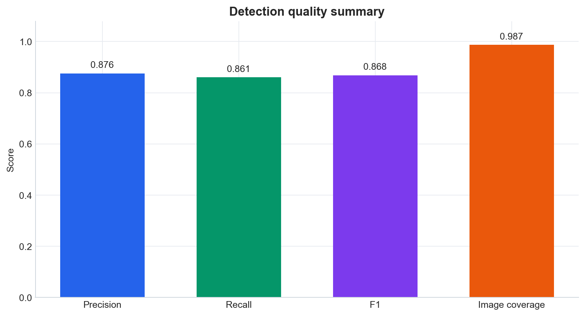
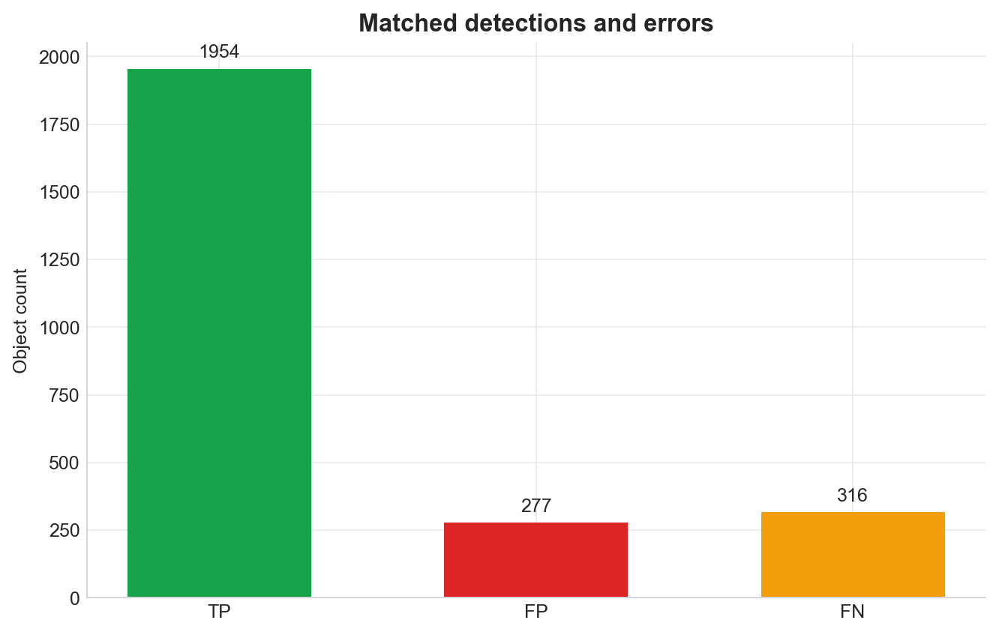
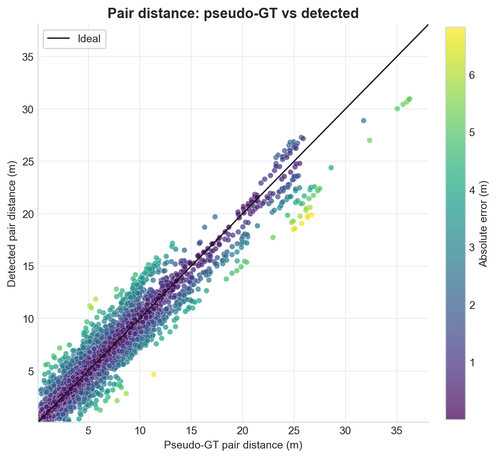
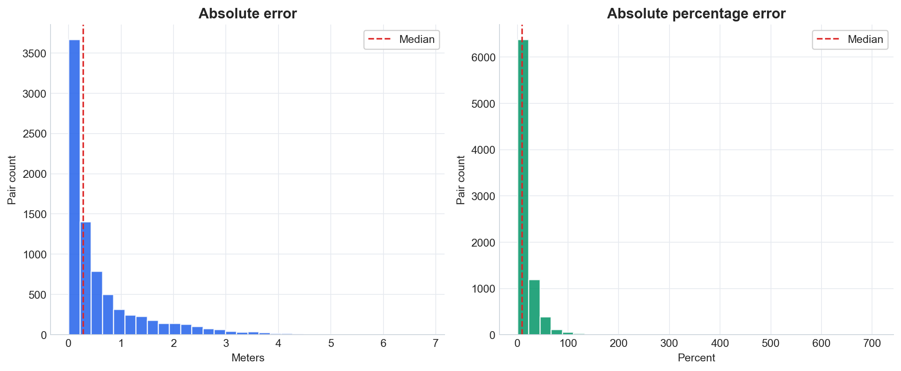
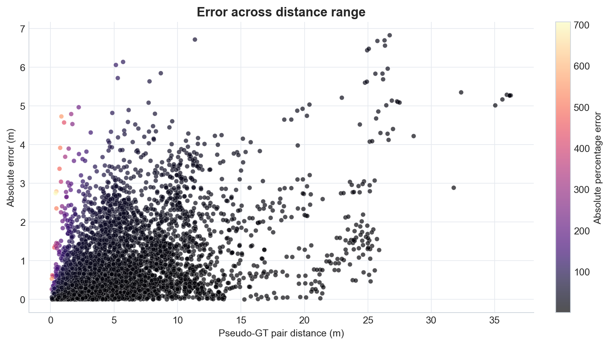

Summary
0.876Precision
0.861Recall
0.868F1
0.626 mPair-distance MAE
Dataset and Parameters
| Evaluated images | 711 |
|---|---|
| GT cylinders | 2270 |
| Images with >=2 GT cylinders | 333 |
Pseudo-GT is derived from human boxes with
height_m=1.25,
f=640.0,
cx=320.0,
cy=320.0.
It is reproducible but is not a measured physical distance.
Detection Metrics
| True positives | 1954 |
|---|---|
| False positives | 277 |
| False negatives | 316 |
| Precision | 0.876 |
| Recall | 0.861 |
| F1 | 0.868 |
| Image coverage, >=1 matched cylinder | 0.987 |
| Image coverage, >=1 predicted cylinder | 0.987 |
Distance Error Metrics
| Matched cylinder pairs | 8254 |
|---|---|
| Images contributing pairs | 314 |
| MAE (m) | 0.626 |
| RMSE (m) | 1.082 |
| Median AE (m) | 0.274 |
| Bias (m) | 0.076 |
| P90 AE (m) | 1.841 |
| P95 AE (m) | 2.515 |
| RME, root relative (%) | 35.480 |
| MAPE (%) | 17.276 |
Figures




